5 Konsep Dasar Machine Learning dan Deep Learning dalam Klasifikasi Objek
Pengenalan Klasifikasi Objek
Klasifikasi gambar mengacu pada proses pengelompokan atau pelabelan gambar ke dalam kelas atau kategori yang berbeda berdasarkan konten visualnya. Ini adalah tugas mendasar dalam visi komputer dan pembelajaran mesin. Tujuan dari klasifikasi gambar adalah untuk mengembangkan algoritma atau model yang secara otomatis dapat mengenali dan memberikan label atau kategori yang tepat pada gambar yang diberikan.
Algoritma klasifikasi gambar menggunakan berbagai teknik dan pendekatan untuk menganalisis fitur visual dari sebuah gambar dan membuat prediksi. Teknik-teknik ini dapat berkisar dari metode tradisional yang didasarkan pada fitur buatan tangan hingga model pembelajaran mendalam yang lebih canggih.
Berikut adalah beberapa poin penting tentang klasifikasi gambar:
- Ekstraksi fitur: Algoritma klasifikasi gambar mengekstrak fitur yang relevan dari gambar untuk merepresentasikan konten visualnya. Fitur-fitur ini dapat mencakup warna, tekstur, bentuk, dan informasi spasial. Contoh algoritma yang dapat digunakan untuk ekstraksi fitur adalah HOG dan SIFT.
- Fase pelatihan: Pada tahap pelatihan, sebuah model dilatih menggunakan kumpulan data berlabel, di mana setiap gambar dikaitkan dengan kelas atau kategori yang diketahui. Model belajar mengenali pola dan hubungan antara fitur yang diekstrak dan label yang sesuai.
- Fase klasifikasi: Pada fase klasifikasi, model yang telah dilatih digunakan untuk memprediksi kelas atau kategori gambar baru yang belum terlihat. Model ini menganalisis fitur visual dari gambar input dan membandingkannya dengan pola yang telah dipelajari untuk membuat prediksi.
- Supervised Learning: Klasifikasi gambar biasanya dilakukan dengan menggunakan algoritma pembelajaran yang diawasi, di mana set data pelatihan diberi label dengan anotasi kebenaran dasar. Model belajar dari contoh-contoh berlabel ini untuk menggeneralisasi dan membuat prediksi pada data yang tidak terlihat.
- Deep Learning: Model pembelajaran mendalam, seperti convolutional neural network (CNN), telah merevolusi klasifikasi gambar. CNN dirancang untuk secara otomatis mempelajari representasi hirarkis gambar, menangkap fitur tingkat rendah dan tingkat tinggi. Mereka telah mencapai kinerja canggih pada berbagai tugas klasifikasi gambar.
- Aplikasi: Klasifikasi gambar memiliki banyak aplikasi di berbagai bidang, termasuk pengenalan objek, deteksi wajah, pencitraan medis, kendaraan otonom, dan pengambilan gambar berbasis konten.
K-Nearest Neighbors (KNN)
K-Nearest Neighbors adalah salah satu algoritma Supervised Learning yang dapat digunakan untuk melakukan klasifikasi citra. Algoritma ini termasuk dalam jenis algoritma pembelajaran berbasis instans atau instance-based learning. KNN bekerja berdasarkan objek yang memiliki atribut yang mirip cenderung memiliki label atau nilai target yang mirip pula.
Konsep Dasar:
- KNN beroperasi dengan menggunakan data latih yang berlabel dan mengklasifikasikan atau memperkirakan label dari data yang tidak diketahui.
- KNN menggunakan jarak (euclidean, manhattan, dll.) untuk mengukur kedekatan antara data.
- Konsep dasar KNN adalah “yang mirip, dikelompokkan bersama.”
- KNN tidak melakukan proses pembelajaran pada tahap pelatihan, tetapi menyimpan semua data latih sebagai basis pengetahuan.
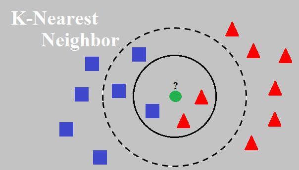
Langkah-Langkah KNN:
- Menentukan jumlah tetangga terdekat (K) yang akan digunakan dalam pengklasifikasian.
- Menghitung jarak antara data yang tidak diketahui dengan setiap contoh data latih menggunakan metrik jarak yang sesuai.
- Mengidentifikasi K contoh data latih terdekat berdasarkan jarak yang dihitung sebelumnya.
- Menggunakan mayoritas voting (untuk klasifikasi) atau rata-rata (untuk regresi) dari label tetangga terdekat untuk memprediksi label atau nilai target dari data yang tidak diketahui.
- Mengeluarkan prediksi sebagai hasil.
Pemilihan Nilai K:
- Pemilihan nilai K yang tepat sangat penting dalam KNN. Nilai K yang salah dapat mengakibatkan overfitting atau underfitting.
- Jika K terlalu kecil (misalnya K = 1), model akan cenderung terlalu responsif terhadap data latih yang spesifik dan lebih rentan terhadap noise.
- Jika K terlalu besar, informasi dari tetangga yang sebenarnya relevan dapat terlupakan, yang dapat menyebabkan kesalahan klasifikasi.
Perhitungan Jarak
Perhitungan jarak dalam KNN adalah langkah penting dalam menentukan tetangga terdekat untuk titik data yang diberikan. Metrik jarak mengukur kemiripan atau ketidakmiripan antara dua titik data dan digunakan untuk menemukan K tetangga terdekat. Ada beberapa perhitungan jarak yang bisa digunakan dalam algoritma KNN:
Jarak Euclidean: Ini adalah jarak garis lurus antara dua titik dalam ruang Euclidean. Metrik ini menghitung akar kuadrat dari jumlah perbedaan kuadrat antara fitur-fitur yang sesuai dari dua titik data.
Bila dalam kasus lain terdapat lebih dari 2 variabel, kita bisa menggunakan rumus euclidean distance seperti gambar 5.2. Mirip dengan rumus pythagoras, hanya saja Euclidean Distance memiliki dimensi lebih dari 2.
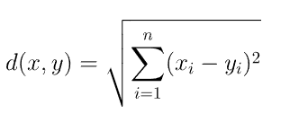
- Jarak Manhattan: Juga dikenal sebagai jarak blok kota atau jarak L1, jarak ini menghitung jumlah perbedaan absolut antara fitur-fitur yang sesuai dari dua titik data. Jarak ini mengukur jarak dengan bergerak hanya dalam arah horizontal atau vertikal. Perhitungan Manhattan Distance dapat dituliskan seperti pada Gambar 5.3.
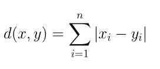
- Jarak Minkowski: Ini adalah generalisasi dari jarak Euclidean dan Manhattan. Jarak ini menghitung akar ke-n dari jumlah nilai absolut yang dipangkatkan dengan pangkat n dari perbedaan antara fitur-fitur yang sesuai dari dua titik data. Perhitungan Minkowski Distance dapat dituliskan seperti pada gambar 5.4.
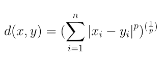
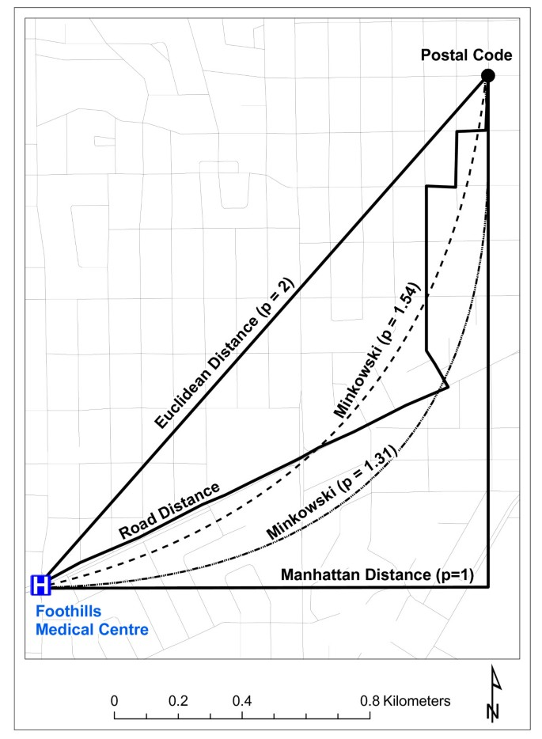
Kelebihan K-Nearest Neighbors:
- Sederhana dan mudah diimplementasikan.
- KNN dapat digunakan untuk masalah klasifikasi dan regresi.
- Algoritma non-parametrik, sehingga tidak bergantung pada asumsi tertentu tentang distribusi data.
- Mampu menangani data yang kompleks, termasuk data yang tidak linear.
Kekurangan K-Nearest Neighbors:
- KNN membutuhkan penyimpanan data latih yang lengkap untuk membuat prediksi, yang dapat memakan banyak memori.
- KNN memiliki kompleksitas komputasi yang tinggi saat menghitung jarak ke semua contoh data latih.
- Rentan terhadap adanya atribut yang dominan karena menggunakan jarak euclidean, sehingga atribut dengan skala besar dapat mendominasi atribut dengan skala kecil.
Convolutional Neural Network (CNN)
Convolutional Neural Network (CNN) adalah algoritma Deep Learning yang dirancang khusus untuk bekerja dengan gambar dan video. Algoritma ini mengambil gambar sebagai input, mengekstrak dan mempelajari fitur-fitur dari gambar tersebut, dan mengklasifikasikannya berdasarkan fitur-fitur yang telah dipelajari.
Algoritma ini terinspirasi dari cara kerja bagian otak manusia, yaitu Korteks Visual. Korteks visual adalah bagian dari otak manusia yang bertanggung jawab dalam memproses informasi visual dari dunia luar. Bagian ini terdiri dari beberapa lapisan, di mana setiap lapisan memiliki fungsinya sendiri. Setiap lapisan mengekstrak informasi tertentu dari gambar atau visual, dan pada akhirnya semua informasi yang diterima dari setiap lapisan digabungkan untuk menginterpretasikan atau mengklasifikasikan gambar atau visual tersebut.
Demikian pula, CNN memiliki berbagai filter, di mana setiap filter mengekstrak informasi tertentu dari gambar seperti tepi, berbagai jenis bentuk (vertikal, horizontal, bulat), dan sebagainya. Semua informasi ini kemudian digabungkan untuk mengidentifikasi gambar tersebut.
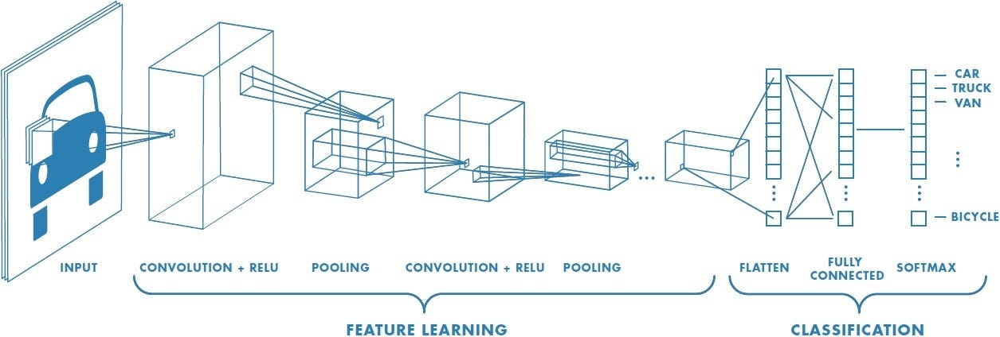
Konsep Dasar CNN:
- CNN terdiri dari beberapa lapisan yang berbeda, termasuk lapisan konvolusi, lapisan pooling, dan lapisan fully connected.
- Arsitektur CNN didasarkan pada prinsip penggunaan ulang parameter dengan menggunakan filter konvolusi yang sama pada seluruh data input.
- Konvolusi adalah operasi yang melibatkan pergeseran filter konvolusi (kernel) pada data input untuk menghasilkan peta fitur atau feature map.
- Pooling digunakan untuk mengurangi dimensi spasial dari feature map yang dihasilkan oleh lapisan konvolusi.
- Fully connected layer menghubungkan setiap neuron di lapisan sebelumnya ke setiap neuron di lapisan berikutnya, mirip dengan jaringan saraf biasa.
Untuk gambaran lebih detailnya dapat kita lihat di Tensorflow Playground
Langkah-langkah Algoritma CNN
Convolutional Layer
Langkah pertama adalah lapisan konvolusi, di mana filter konvolusi bergerak melalui data input dan melakukan operasi konvolusi. Filter konvolusi berukuran kecil dan dapat dipelajari oleh algoritma. Setiap filter menghasilkan peta fitur dengan mengekstraksi pola spesifik dari data input. Selama konvolusi, filter dikalikan dengan bagian dari data input yang sedang diperiksa dan hasilnya dijumlahkan untuk membentuk elemen peta fitur.
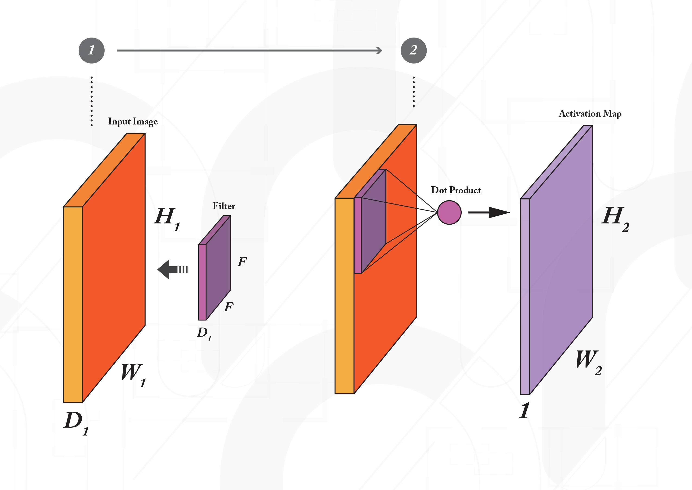
Dengan menggeser convolve filter disetiap kemungkinan posisi filter pada gambar, dihasilkan sebuah activation map.
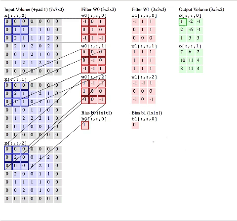
Proses ini diulang dengan beberapa filter berbeda, hingga menghasilkan gambar baru yang merupakan kumpulan dari activation maps.
Pooling Layer
Setelah lapisan konvolusi, lapisan pooling digunakan untuk mengurangi resolusi spasial dari peta fitur.
Tujuan pooling adalah untuk mengurangi dimensi dan kompleksitas komputasi sambil mempertahankan fitur penting.
Metode pooling yang paling umum digunakan adalah max pooling. Namun terdapat metode pooling lain yang dapat digunakan seperti Average Pooling dan L2 Norm Pooling.
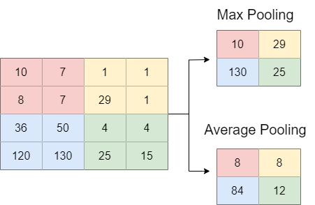
Flattening
Flattening merupakan proses mengubah representasi matriks multidimensional menjadi vektor satu dimensi. Proses flattening dilakukan dengan mengambil semua elemen dalam matriks multidimensional dan menyusunnya menjdi satu baris.

Fully Connected Layer
Setelah diperatakan menjadi vektor dan disambungkan ke lapisan fully connected.
Lapisan ini bertindak sebagai klasifikasi akhir atau lapisan regresi, di mana prediksi akhir dilakukan berdasarkan fitur-fitur yang telah dipelajari.
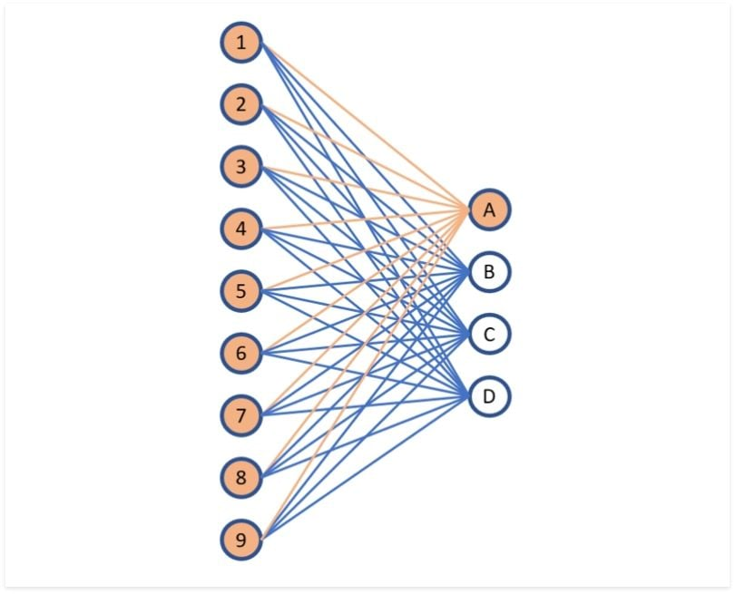
Pelatihan
Dalam fase pelatihan, CNN memperbarui bobot dan bias filter konvolusi serta parameter lapisan fully connected dengan meminimalkan fungsi loss antara prediksi dan label yang benar.
Optimizer seperti Stochastic Gradient Descent (SGD) atau Adam digunakan untuk mengatur laju pembelajaran dan memperbarui parameter secara iteratif.
Transfer Learning
Definisi dan Konsep Dasar Transfer Learning
Transfer learning merupakan proses atau pendekatan dalam pembelajaran mesin dimana pengetahuan yang didapatkan dari pelatihan model pada suatu tugas, dapat digunakan pada tugas lain yang memiliki kemiripan dengan masalah yang sedang dipecahkan. Pada konteks Convolutional Neural Networks (CNN), transfer learning mengacu pada penggunaan model yang sebelumnya sudah dilatih pada tugas pemrosesan citra untuk diadaptasi ke tugas yang baru. Dalam pengembangan model Convolutional Neural Networks (CNN), transfer learning cukup penting, dikarenakan transfer learning dapat menghemat waktu dan sumber daya, hal ini dikarenakan untuk melatih model CNN dari awal membutuhkan waktu yang cukup lama serta komputasi yang besar. Sedangkan jika menggunakan transfer learning kita dapat menggunakan model yang sudah ada. Yang kedua, performa akan menjadi lebih baik dikarenakan model telah mempelajari fitur-fitur umum dari data citra yang dapat diimplementasikan pada tugas yang baru. Jika kita memiliki dataset yang terbatas, transfer learning dapat membantu dalam pemanfaatan pengetahuan yang sudah ada dari dataset yang lebih banyak pada tugas sebelumnya. Transfer learning juga dapat mengatasi masalah overfitting yang sering terjadi pada model yang dilatih menggunakan dataset yang kecil. Semakin mirip tugas pertama dengan tugas yang baru maka akan semakin lebih baik. Dalam Deep Learning, pelatihan model pada tugas pertama dinamakan pre-training, sedangkan penerapan model yang sudah dilatih pada tugas pertama ke training model tugas baru dinamakan fine-tuning.
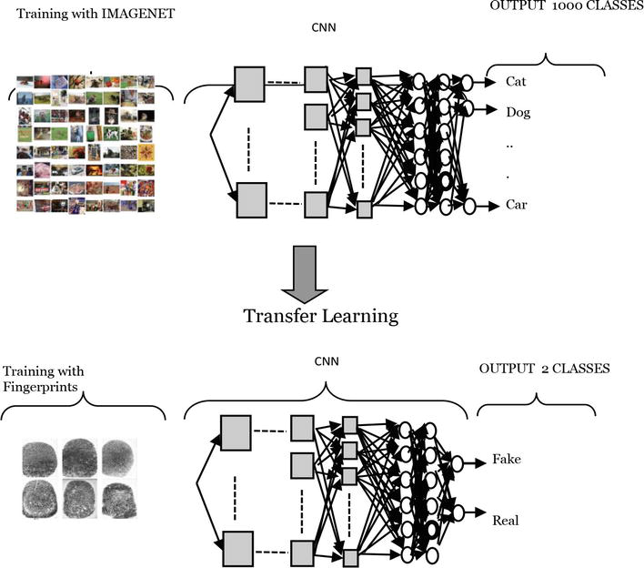
Langkah-langkah Transfer Learning pada CNN
Setelah memahami definisi dan konsep dasar dari transfer learning, selanjutnya adalah memahami langkah-langkah transfer learning khususnya pada Convolutional Neural Networks (CNN). Berikut merupakan langkah-langkah yang diperlukan :
Seleksi model dasar
Pertama-tama dilakukan pemilihan arsitektur dasar model CNN. Terdapat beberapa arsitektur yang terbukti efektif dalam pemrosesan citra yaitu seperti VGG, ResNet, Inception dan MobileNet. Arsitektur-arsitektur tersebut memiliki berbagai lapisan konvolusi, pooling dan fully connected yang akan membantu dalam ekstraksi fitur.Feature Extraction Setelah memilih arsitektur dasar model, selanjutnya model dasar tersebut digunakan sebagai ekstraktor fitur. Pada lapisan-lapisan konvolusi awal telah mempelajari fitur-fitur umum dari dataset yang besar dan beragam. Fitur-fitur tersebut merupakan hasil ekstraksi pola yaitu tepi, tekstur, dan bentuk dari gambar.
Fine-tuning
Lapisan-lapisan akhir kebanyakan berfungsi sebagai klasifikasi atau regresi, dengan dilakukan fine-tuning model dapat menyesuaikan representasi-fitur yang lebih spesifik untuk tugas yang baru. Pada fine-tuning, model dapat dilatih ulang menggunakan dataset khusus disesuaikan dengan tugas yang ingin diselesaikan.Freezing Layers
Dalam transfer learning, freezing layer tidak selalu wajib diterapkan dikarenakan hal tersebut bergantung pada karakteristik tugas dan sumberdaya yang tersedia. Freezing layer merupakan pengamanan nilai bobot pada beberapa lapisan awal model dasar(lapisan konvolusi awal) sehingga tidak mengalami perubahan pada pelatihan ulang. Hal ini mengakibatkan fitur-fitur umum tetap tidak berubah, sedangkan lapisan akhir yang lebih spesifik disesuaikan.Domain Similarity
Transfer learning yang paling efektif yaitu ketika domain data pelatihan awal(domain asal) memiliki kemiripan atau kesamaan dengan domain data tugas baru(domain target).Domain adalah kumpulan data yang berasal dari sumber tertentu. Sedangkan domain similarity sendiri merupakan sejauh mana dua domain data memiliki kemiripan atau kesamaan dalam hal fitur, distribusi, karakteristik, atau pola. Jika kedua domain kemiripannya tinggi, maka akan berpotensi besar untuk diadaptasi karena relevan.Data Augmentation
Augmentasi data merupakan teknik untuk memperkaya dataset pelatihan yaitu dengan berbagai variasi citra seperti rotasi, pergeseran, dan perubahan ukuran citra. Dengan begitu peningkatan generalisasi model akan meningkat.Pengaturan Parameter
Selama transfer learning, perlu dilakukan penyesuaian parameter seperti learning rate dan batch size supaya sesuai dengan karakteristik dataset dan tugas baru.Evaluasi dan Fine-tuning
Setelah tahap fine-tuning, model dievaluasi pada dataset validasi dan, jika diperlukan, dapat dilakukan fine-tuning lebih lanjut guna memperbaiki performa.
MobileNet
Pada tahap seleksi model dasar pada fine tuning, terdapat beberapa arsitektur yang dapat dipilih seperti VGG, ResNet, Inception dan MobileNet. Pada kali ini akan dibahas mengenai MobileNet. Arsitektur MobileNet adalah salah satu arsitektur pada Convolutional Neural Networks (CNN) yang berguna dalam mengatasi kebutuhan computing resource yang berlebih. Arsitektur ini dibuat oleh para peneliti Google yang mana dapat digunakan untuk ponsel. Konvolusi pada MobileNet terbagi menjadi dua yaitu depthwise convolution dan pointwise convolution seperti pada gambar 5.12 dan gambar 5.13. Pada gambar 5.14 merupakan arsitektur dari MobileNet.
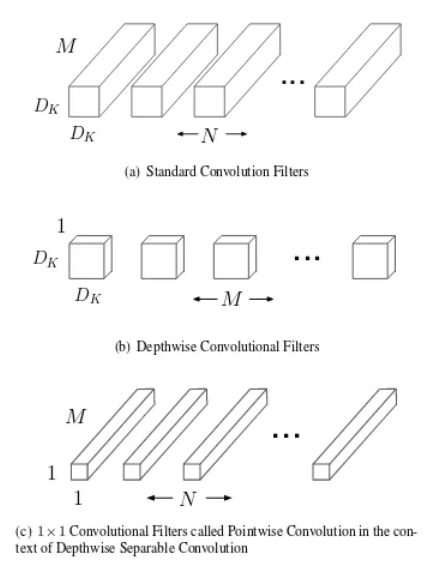
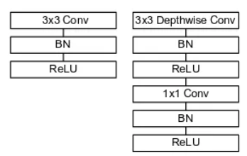
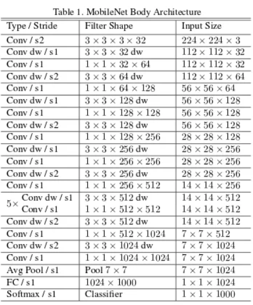
MobileNet memiliki beberapa versi, per September 2021 versi MobileNet terdapat 3 versi yaitu MobileNetV1, MobileNetV2, dan MobileNetV3. Untuk MobileNetV2 dirilis pada April 2017 lalu. MobileNetV2 masih menggunakan depthwise dan pointwise convolution. Dari versi MobileNetV1 ke MobileNetV2 dilakukan peningkatan yaitu dengan menambahkan dua fitur baru yaitu linear bottleneck dan shortcut connections antar bottlenecks. Struktur arsitektur dari MobileNetV2 dapat dilihat pada gambar 4 di bawah.
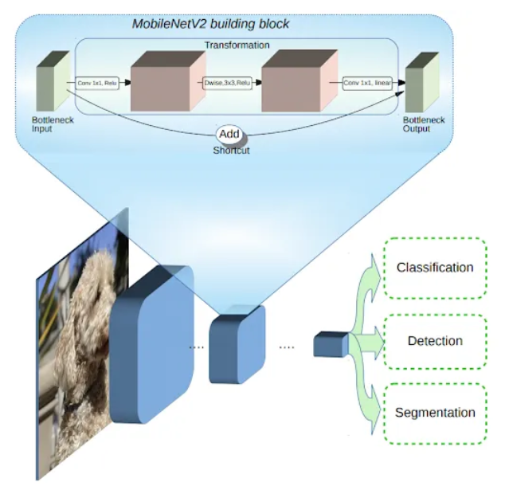
Diantara model terdapat input dan output pada bagian bottleneck, sedangkan pada layer bagian dalam dilakukan enkapsulasi kemampuan model guna mengubah input dari konsep tingkat yang lebih rendah (i.e. piksel) ke deskriptor tingkat yang lebih tinggi (i.e. kategori gambar). Shortcut antar bottlenecks memungkinkan training atau pelatihan yang lebih cepat dan akurasi yang lebih baik, hal ini seperti koneksi residual pada CNN tradisional.
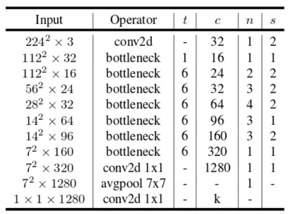